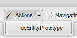

Générer le prototype¶
Avant de commencer à enregistrer des informations dans votre modèle, il faut générer le prototype correspondant.
Vous pouvez générer un prototype pour un modèle au complet ou pour certaines de ses entités.
Générer un prototype pour un modèle :¶

Figure 54 : fonction Actions et son sous-menu pour le modèle.
L’action doModelPrototype génère le prototype pour un modèle sélectionné.
- À partir de l’onglet Modèle, sélectionnez le modèle à générer.
- Cliquez sur le bouton Actions du menu des fonctions.
- Cliquez sur l’option doModelPrototype. Un message de confirmation de l’opération sera affiché sur la barre de message.
- Réinitialiser le menu principal en cliquant sur le bouton
 pour faire apparaître les vues récemment créées.
Le nouveau prototype est placé dans AutoMenu –> ProtoOptions –> nom_du_projet –> nom_du_modèle.
pour faire apparaître les vues récemment créées.
Le nouveau prototype est placé dans AutoMenu –> ProtoOptions –> nom_du_projet –> nom_du_modèle.
Note
Les nouvelles vues sont générées automatiquement à l’intérieur de l’arborescence AutoMenu -> ProtoOptions. Notez que les vues des prototypes antérieures sont aussi affichées avec les vues récemment créées. Une vue est créée pour chaque entité dans le modèle de données. Vous aurez le même nombre de vues que des entités. Les noms des vues sont composés du nom du modèle suivi d’un tiret (-) et du nom de l’entité qu’elle représente.
- Les vues dans l’arborescence AutoMenu -> ProtoOptions sont de vues générées automatiquement, si vous effectuez des modifications sur ces vues, la prochaine fois que le menu principal sera rafraîchi, les vues retourneront à leur valeur par défaut. Pour garder les modifications des vues, il est nécessaire de créer un nouveau dossier sur l’arborescence du menu principal. Si vous avez déjà créé un dossier pour le projet, glissez la nouvelle vue à l’intérieur de ce dossier. Dans le cas contraire, passez aux prochaines étapes.
- Cliquez sur le bouton
 Nouveau dossier du menu principal. Entrez le nom du nouveau dossier, par exemple le nom du
projet. Le nouveau dossier apparaîtra à la fin de la liste des vues générées dans AutoMenu -> ProtoOptions.
Nouveau dossier du menu principal. Entrez le nom du nouveau dossier, par exemple le nom du
projet. Le nouveau dossier apparaîtra à la fin de la liste des vues générées dans AutoMenu -> ProtoOptions. - Procédez à glisser-déposer à l’intérieur de ce dossier chacune de vues appartenant à ce projet. Sélectionnez une vue à la fois.
- Quand toutes les vues seront à l’intérieur du dossier, glissez et déposez le dossier vers l’arborescence du menu principal. Par exemple, après la composante relation. Assurez-vous que le dossier se retrouve à l’extérieur de l’arborescence AutoMenu.
- Sélectionnez AutoMenu et cliquez sur le bouton
 Supprimer noeud du menu principal. Ceci effacera l’arborescence
d’AutoMenu (la suppression n’est pas définitive, pour récupérer cette arborescence cliquez sur le bouton réinitialiser du menu
principal).
Supprimer noeud du menu principal. Ceci effacera l’arborescence
d’AutoMenu (la suppression n’est pas définitive, pour récupérer cette arborescence cliquez sur le bouton réinitialiser du menu
principal). - Pour terminer, cliquez sur le bouton Enregistrer
 du menu principal.
du menu principal.
Warning
Si vous n’enregistrez pas les modifications du menu, elles seront perdues à la fermeture de l’application du prototypeur.
Créer ou copier une vue pour une entité (concept):¶
Il existe trois façons pour créer une nouvelle vue :
avec l’action doEntityPrototype :
Figure 55 : fonction Actions et son sous-menu pour l’entité.
L’action doEntityPrototype génère le prototype pour une entité sélectionnée.
- À partir de l’onglet Entité, sélectionnez l’entité à générer.
- Cliquez sur le bouton Actions du menu des fonctions.
- Entrer un nom pour cette vue du prototype ;
- Cliquez sur l’option doEntityPrototype. Un message de confirmation de l’opération sera affiché sur l’interface la barre de message.
- Réinitialiser
Note
Les nouvelles vues sont générées automatiquement à l’intérieur de l’arborescence AutoMenu -> ProtoOptions. Notez que les vues des prototypes antérieures sont aussi affichées avec les vues récemment créées. Une vue est créée pour chaque entité dans le modèle de données. Vous aurez le même nombre de vues que des entités. Les noms des vues sont composés du nom du modèle suivi d’un tiret (-) et du nom de l’entité qu’elle représente.
- Les vues dans l’arborescence AutoMenu -> ProtoOptions sont de vues générées automatiquement, si vous effectuez des modifications sur ces vues, la prochaine fois que le menu principal sera rafraîchi, les vues retourneront à leur valeur par défaut. Pour garder les modifications des vues, il est nécessaire de créer un nouveau répertoire sur l’arborescence du menu principal. Si vous avez déjà créé un dossier pour le projet, glissez la nouvelle vue à l’intérieur de ce dossier. Dans le cas contraire, passez aux prochaines étapes.
- Cliquez sur le bouton
- Procédez à glisser-déposer à l’intérieur du dossier chacune de vues appartenant à ce projet. Sélectionnez une vue à la fois.
- Quand toutes les vues seront à l’intérieur du dossier, glissez et déposez le dossier vers l’arborescence du menu principal. Par exemple, après la composante relation. Assurez-vous que le dossier se retrouve à l’extérieur de l’arborescence AutoMenu.
- Sélectionnez AutoMenu et cliquez sur le bouton
- Pour terminer, cliquez sur le bouton Enregistrer
Warning
Si vous n’enregistrez pas les modifications du menu, elles seront perdues à la fermeture de l’application du prototypeur.
- à partir du Menu principal :
À partir du menu principal, sélectionnez le dossier où vous voulez placer la nouvelle vue, cliquez sur
pour créer une nouvelle vue.
Remplir les champs avec :
- text : le nom de la vue;
- option : cherchez l’entité à partir de la liste des options;
- iconCls : nom de l’icône;
- qtip : pour créer un tooltip (infobulle).
- qtitle : pour le titre à afficher lorsque la vue est ouverte dans la grille principale.
Les deux premiers champs sont obligatoires, les autres sont optionnels.
- par la copie d’une vue existante :
Vous pouvez copier une vue existante avec ses configurations, à partir du menu des configurations :
- double-cliquez sur la vue à copier pour l’ouvrir dans un onglet;
- sélectionner Configuration => Méta;
- cliquez sur le nom de la vue en haut de l’arborescence de la méta pour afficher les options à droite;
- dans l’option viewCode, entrez le nouveau nom de la vue;
- cliquez sur le bouton enregistrer;
- le nom complet sera affiché en haut de la fenêtre de configuration de la Méta (exemple ProtoLib.userFiles.nomDeLaVue);
- réinitialiser
- la nouvelle vue sera placée dans un dossier donné par le nom complet dans AutoMenu => ProtoViews. Pour notre exemple, la vue sera placée dans AutoMenu => ProtoViews => ProtoLib => userFiles => ViewCode;
- déplacer la vue hos dossier AutoMenu avant de quitter et enregistrer pour ne pas perdre vos modifications, car le dossier AutoMenu est généré automatiquement.
Alimenter la base de données :¶
- Sélectionnez une vue ;
- cliquez sur ajouter ;
- remplir les champs requis et enregistrer.